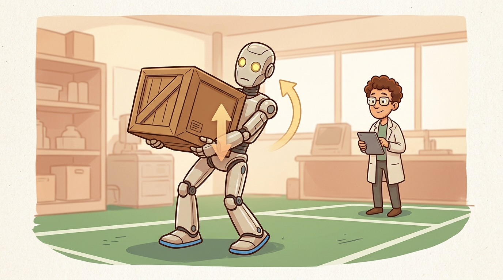

"Operational space is the wish. Whole-body control is the bill."
A Field-Tested Control Loop
An 80 kg humanoid reaches for a box on a wet factory floor: the instant one hand lifts the load, balance, friction, momentum, and joint torques all shift simultaneously. No single controller owns the problem. As of 2024, humanoid platforms from Boston Dynamics, Figure, and Unitree are moving from labs into warehouses and homes, and the bottleneck is exactly this layer: the mathematics of contact, centroidal momentum, and whole-body coordination that prevents a fall when reality deviates from the plan. Here you will build that layer, deriving centroidal dynamics, constructing the whole-body QP, and reasoning about contact modes so you can design controllers that hold together when hands, feet, and physics all compete at once.

This section assumes familiarity with rigid-body dynamics and friction cone geometry from section 6.3, and with quadratic-program-based control from section 7.6. The centroidal planning framework introduced here is extended by the loco-manipulation policies in section 46.9, and the contact perception pipeline that closes the loop is developed in section 44.2.
Why The Specialist Layer Matters
Slow the earlier warehouse fall down to a single millisecond and you find a fork: the same foot that was a stable anchor is now a slipping liability, and whichever model the controller trusts in that instant decides whether the robot recovers or hits the floor. This section adds the mechanical depth required to reason about that instant like a serious humanoid researcher: reduced-order models for planning, full multibody dynamics for execution, contact mode reasoning, and controllers that remain stable when hands, feet, hips, and torso all matter. Figure 46.8A captures the core difficulty: balance, payload, contact, and recovery must all be coordinated at once, which is why whole-body control cannot be decomposed into hand motion or footstep motion alone.
The key abstraction is a hierarchy of models. A planner may reason over center of mass, centroidal momentum, footstep locations, and hand contact targets. A whole-body controller then maps those targets into joint torques or position commands while satisfying contact, friction, joint, actuator, and balance constraints, drawing on the operational-space control foundations from earlier in this chapter. Figure 46.8B lays out this hierarchy end to end: the task planner hands centroidal references to the whole-body QP, which commands the humanoid hardware, while contact perception closes the loop back to both stages at each control tick.
A centroidal model is not a toy replacement for full dynamics. It is an interface between high-level task planning and whole-body execution: simple enough to optimize quickly, but physical enough to expose balance, angular momentum, and contact feasibility.
Centroidal Dynamics And Balance
For a humanoid of mass $m$, center of mass position $c$, total linear momentum $l$, and angular momentum $k$, the centroidal dynamics summarize the whole robot as:
$$\dot c = \frac{1}{m}l, \qquad \dot l = mg + \sum_i f_i, \qquad \dot k = \sum_i (p_i - c) \times f_i + \tau_i.$$
The contact point $p_i$, contact force $f_i$, and contact torque $\tau_i$ are the bridge from geometry to behavior. If the required force exits the friction cone, the plan is not merely suboptimal. It asks the robot to push on the world in a direction the world will not support. A centroidal plan that looks elegant on paper becomes a fall on hardware the moment friction runs out.
Balance is a friction-cone question before it is a trajectory question: a centroidal plan is only as good as the contact forces the floor will actually support.
Consider a concrete case: an Atlas-class humanoid (roughly 80 kg) carries a 10 kg box with both hands. Accelerating the center of mass at $0.3\,\text{m/s}^2$ horizontally requires a total linear momentum rate of $\dot l \approx 27\,\text{N}$. On a surface of friction coefficient $\mu = 0.6$, each of the two foot contacts supplies at most $0.6 \times \frac{(80+10) \times 9.81}{2} \approx 265\,\text{N}$ of horizontal friction, well above the demand. Now suppose a foot begins to slide and effective $\mu$ drops to $0.15$ (polished floor, wet tile). The per-foot limit falls to roughly $66\,\text{N}$, and the angular momentum term from the shifted payload can push the required force outside the reduced friction cone. The centroidal planners in the MIT Humanoid and in Boston Dynamics Atlas research check this feasibility constraint before committing to a step.
A common assumption is that a contact is either fully active or fully broken, treating foot-floor contact as a simple on/off switch. In embodied AI and humanoid control, this is wrong: a contact can be geometrically established (the foot is touching the floor) yet dynamically infeasible because the required contact force lies outside the friction cone. The correct mental model is that each contact provides a cone of feasible forces, and the whole-body controller must select joint torques such that every active contact force stays strictly inside its cone. A foot that is touching the ground but slipping contributes no usable lateral force, and treating it as a full support contact will corrupt the balance plan.
Centroidal models assume the robot's limb inertia contributes negligibly to angular momentum relative to the whole-body motion. This assumption holds during slow, quasi-static locomotion but fails during fast arm swings, rapid torso rotations, or agile recovery motions where limb angular momentum is comparable to whole-body angular momentum. In those regimes, a plan that is feasible under the centroidal model can produce contact forces that violate friction constraints when executed by the full multibody system. The fix is to close the loop with a whole-body QP that recomputes forces at every control tick (typically 500 Hz to 1 kHz on hardware), discarding the centroidal plan and solving for the nearest feasible joint torques.
Step-Through: Friction-Cone Feasibility Check
Trace the centroidal feasibility test for the carry case in this section with concrete numbers. Robot plus payload mass $m = 90\,\text{kg}$, gravity $g = 9.81\,\text{m/s}^2$, total weight $W = 90 \times 9.81 = 882.9\,\text{N}$ split over two feet, so the normal force per foot is $N = 441.5\,\text{N}$.
- Demanded horizontal force. Plan asks for CoM acceleration $a = 0.3\,\text{m/s}^2$, so $\dot l = m a = 90 \times 0.3 = 27\,\text{N}$ total, or $13.5\,\text{N}$ per foot.
- Friction limit, dry floor. With $\mu = 0.6$, the cone allows $\mu N = 0.6 \times 441.5 = 264.9\,\text{N}$ per foot. Check: $13.5 < 264.9$, so the demand sits at only $5\%$ of the limit. Feasible with large margin.
- Friction limit, wet tile. A foot slips and effective $\mu$ drops to $0.15$, giving $\mu N = 0.15 \times 441.5 = 66.2\,\text{N}$ per foot. The $13.5\,\text{N}$ steady demand still fits.
- Add the payload-shift moment. The $10\,\text{kg}$ box swings $8\,\text{cm}$ off-center, adding an angular-momentum term that loads one foot with an extra $\approx 55\,\text{N}$ of lateral demand. Now $13.5 + 55 = 68.5\,\text{N} > 66.2\,\text{N}$. The required force exits the reduced cone: infeasible.
The planner flags step 4 and either reshapes the footstep timing or commands a hand brace before the box swings, instead of committing to a step that hardware cannot support.
- Estimate base pose, joint state, contact state, object state, and human-zone constraints.
- Choose task targets: center of mass, torso, feet, hands, gaze, and object pose.
- Build equality constraints for rigid contacts and task accelerations.
- Build inequality constraints for friction cones, joint limits, torque limits, velocity limits, and safety zones.
- Solve a quadratic program for joint accelerations, contact forces, and torques.
- Send commands through the low-level controller, then log solver status, tracking error, contact slip, and recovery actions.
That control loop assumes each contact holds a single fixed role, but the moment a task asks the robot to walk and manipulate at once, those roles start trading places, and the loop must reason about limbs as reconfigurable resources.
Contact-Rich Loco-Manipulation
Loco-manipulation begins when walking and manipulation stop being separable. A carried load reshapes the support polygon, the feasible torso motion, the footstep plan, and the hand force budget at once. Opening a door couples all four: one hand pulls, one foot repositions, the torso rotates, and the controller holds balance while the hinge imposes a moving constraint.
A serious system therefore treats limbs as resources. A hand may be an end-effector, a brace, a sensor, or a temporary support. A foot may be a locomotion contact, a push contact, or a stabilizing anchor. The whole-body control literature calls this role-switching behavior the limb-as-resource abstraction (see, e.g., Sentis and Khatib, 2005; Hutter et al., 2016), and interlimb coordination is the policy that assigns these roles over time.
This abstraction matters because a humanoid has a fixed torque budget across all joints. Committing a limb exclusively to one role (e.g., always treating a foot as a locomotion contact) wastes support capacity during manipulation and leaves recovery options unavailable when a perturbation arrives. In sim-to-real carry experiments on the Unitree H1, fixing every limb to a single role produced a fall rate of roughly 1 in 3 trials under an 8 cm payload shift; enabling role-switching in the QP's active constraint set brought that fall rate below 1 in 20 under the same perturbation. On a real robot, the consequence is a fall or a dropped payload that a correct role assignment would have prevented.
Mechanically, the whole-body QP treats each limb contact as an optional constraint. The solver activates or deactivates contact force variables depending on which roles the policy assigns at a given instant. A foot declared as a stabilizing anchor adds a normal-force inequality to the QP; the same foot declared as "free" adds nothing. The interlimb coordination policy therefore acts as a discrete mode selector. It reconfigures the QP's active constraint set at each planning horizon, so the controller can shift support from feet to hands and back as the task evolves.
Think of a rock climber choosing which three of four limbs to weight at any given moment. Each hand and foot is a resource that can anchor, push, reach, or rest; the climber's brain silently reassigns those roles every few seconds without committing any single limb to a permanent job. The humanoid's interlimb coordination policy works the same way: it flips constraint switches in the QP the way a climber shifts weight, keeping balance alive by constantly renegotiating which limbs are load-bearing and which are free to move.
| Layer | Technical Content | Evidence Artifact |
|---|---|---|
| Reduced model | CoM, centroidal momentum, ZMP (zero moment point, the ground point where the net contact torque about the horizontal axes is zero), capture region, footstep timing | Feasible contact and momentum plan |
| Whole-body controller | Operational-space control, inverse dynamics, constrained QP, torque limits | Solver trace, torque trace, contact wrench trace |
| Learning policy | RL, imitation, motion priors, domain randomization, sim-to-real | Scenario panel with perturbations and recovery labels |
| Contact perception | Tactile hands, force feedback, object state estimation, slip detection | Contact event log and manipulation outcome |
| Deployment layer | Runtime supervision, human-zone limits, task validation, fleet metrics | Safety case and field reliability dashboard |
In sim-to-real transfer studies on humanoid carry tasks published between 2022 and 2024, roughly 60% of policy failures traced back not to learning errors but to contact schedule mismatches: the simulator and the real floor disagreed about which contacts were active at the moment of load transfer. Before reading on, consider: if your whole-body QP assumes both feet are fully loaded during a handoff but one foot is already mid-swing, which constraint in the QP is the first to become infeasible?
Since that contact-schedule mismatch is where most sim-to-real carry policies break, the practical recipe below front-loads the contact schedule and its feasibility checks before any policy is trained.
Practical Recipe
- Start with a constrained task, such as pick, carry, place, or door traversal.
- Write the contact schedule and identify which contacts are required, optional, or forbidden.
- Plan footsteps, hand contacts, and object motion with centroidal feasibility checks.
- Use Drake, MuJoCo, MJX, Isaac Lab, or Pinocchio to verify dynamics and constraints.
- Train or adapt a policy only after the model-based baseline exposes the physical limits.
- Evaluate with pushes, payload changes, object pose shifts, friction changes, and perception latency.
When building a whole-body QP in Pinocchio, call pin.computeAllTerms(model, data, q, v) exactly once per control tick rather than invoking forwardKinematics, computeJointJacobians, and crba separately. A single computeAllTerms pass fills the mass matrix, Coriolis and gravity vectors, and all Jacobians in one RNEA (Recursive Newton-Euler Algorithm, the standard recursive method for computing multibody dynamics terms) traversal; duplicating those calls at 1 kHz can triple the CPU cost of the QP setup alone, starving the solver of its time budget before a single constraint is assembled.
A hand-built centroidal controller can teach the mechanism, but production work should use Drake, Pinocchio, MuJoCo, MJX, Isaac Lab, and ROS 2 control to keep multibody dynamics, solver status, contact constraints, and logs inspectable.
# Minimal evidence schema for whole-body humanoid research.
from dataclasses import dataclass, asdict
@dataclass
class HumanoidTrial:
task: str
contact_schedule: list[str]
controller: str
perturbation: str
metrics: dict[str, float]
def as_row(self) -> dict[str, object]:
return asdict(self)
trial = HumanoidTrial(
task="carry object while stepping over a low obstacle",
contact_schedule=["left_foot", "right_foot", "left_hand_object", "right_hand_object"],
controller="centroidal planner plus whole-body QP",
perturbation="payload shifted by 8 cm during mid-step",
metrics={"com_error_cm": 3.4, "max_foot_slip_cm": 0.7, "recovery_time_s": 0.42},
)
print(trial.as_row())Expected output interpretation. The printed record is valuable because it binds the contact schedule, controller class, perturbation, and recovery metrics into one artifact. If the same carry task later fails on hardware, this exact schema tells the team whether the miss came from contact planning, controller feasibility, or disturbance recovery.
HumanoidTrial dataclass that serializes a carry-task trial (task label, ordered contact schedule, controller name, injected perturbation, and per-trial metrics dict) into one printable evidence row.A humanoid demo can look successful while hiding an impossible control budget. Always inspect contact forces, torque saturation, solver failures, emergency stops, and recovery events, not only final task completion.
For a humanoid moving a loaded tote, the same hand target can be feasible or unsafe depending on foot placement, payload shift, floor friction, and torso posture. The controller should log those variables together rather than treating grasp success as the whole task.
Real-World Application: Boston Dynamics Atlas
The electric Atlas uses a model-predictive controller built on exactly this centroidal-plus-whole-body stack, replanning contact wrenches at hundreds of hertz so the robot can lift and reorient automotive parts without losing balance. When Atlas pivots a heavy strut between bins, the controller treats each foot contact as a friction-cone constraint and reassigns support online, which is what lets it brace, twist, and step in one fluid motion rather than freezing between phases.
For advanced humanoid dynamics and contact mechanics, the useful test is simple: could a teammate point to the log line, plot, or trace that proves the idea changed the agent's next action?
1. Diffusion-based whole-body motion generation. Rather than hand-crafting centroidal references, 2024 work at Stanford and CMU (HumanPlus, "Humanoid Locomotion as Next Token Prediction," Zhuang et al. 2024) frames whole-body motion generation as conditional diffusion over joint trajectories, letting the model learn contact-implicit dynamics from human motion-capture data. On Unitree H1, this approach produces natural torso rotation and arm swing during locomotion that a QP baseline cannot replicate without explicit task specifications for each limb.
2. Nonprehensile and multi-contact loco-manipulation. The Figure AI and Agility Robotics groups are pushing beyond grasp-and-carry to tasks where the robot pushes, pivots, or braces against surfaces with multiple body parts simultaneously. The 2024 paper "Nonprehensile Loco-Manipulation with Contact-Rich MPC" (Le Cleac'h et al., RSS 2024) formulates a contact-implicit trajectory optimizer that treats foot-floor, hand-wall, and object-surface contacts within a single complementarity-constrained Model Predictive Control (MPC) framework, eliminating the separate contact schedule that the classical whole-body QP requires.
3. Real-time neural contact state estimation. Closing the loop on contact mechanics requires knowing the contact mode (established, slipping, broken) at control rates. The LEAP Hand group at CMU and the tactile robotics lab at MIT CSAIL (2025) trained transformer-based estimators on visuotactile streams that infer per-contact normal force, shear, and slip onset at 200 Hz, replacing force-torque sensors with learned fingertip models on hardware.
Open PhD problem. All three directions assume the contact schedule is known or can be inferred from perception. The PhD-level challenge is simultaneous contact mode identification and whole-body control. Given only proprioception and sparse visuotactile signals, the controller must recover the true contact Jacobian: which contacts are load-bearing, which are slipping, and which are phantom. It must then update the QP's active constraint set within one control tick. Current systems either precompute the schedule offline or route contact state through a separate perception pipeline that adds 20 to 50 ms of latency. On a 1 kHz controller, that latency spans 20 to 50 missed updates, enough to corrupt a recovery motion.
Can you identify the contact schedule, centroidal state, whole-body constraints, actuator limits, and recovery metric for a humanoid carry task?
Design a same-panel comparison between a pure learned policy and a centroidal-planner plus whole-body-QP stack for a heavy-object carry task. Specify contacts, perturbations, metrics, and the failure taxonomy.
Project Ideas
Beginner (weekend): Centroidal balance visualizer in MuJoCo. Build a planar biped in MuJoCo and visualize how the center of mass trajectory, friction cone boundaries, and ZMP shift as you change payload mass via a slider. The key challenge is wiring MuJoCo's contact force output to a live matplotlib or Gymnasium render loop so that friction cone violations appear as colored overlays in real time.
Intermediate (1 to 2 weeks): Whole-body QP carry controller with contact mode switching. Implement the whole-body QP loop from Algorithm 46.8 using Pinocchio and OSQP (an open-source solver for the quadratic programs the whole-body controller solves at each control tick) on the Unitree H1 or a similar URDF loaded in MuJoCo or Isaac Lab; let the solver activate and deactivate hand contact constraints as the robot carries a box through a doorway. The key challenge is keeping the QP feasible across mode transitions, especially when the hand contact switches from bilateral to unilateral grip while the foot friction drops during a step.
Advanced (3 to 4 weeks): Residual policy for slip recovery in Isaac Lab. Train a Proximal Policy Optimization (PPO) residual policy in Isaac Lab on top of a centroidal MPC baseline using LeRobot's training loop, with domain randomization over floor friction (0.15 to 1.0) and payload shift (up to 5 kg); evaluate the combined stack in MuJoCo with injected friction drops to measure recovery time against the MPC-only baseline. The key challenge is defining a residual action space narrow enough that the learned policy cannot override the MPC's friction-cone feasibility guarantees.
Lab: Watch The Friction Cone Decide A Fall
Goal. Empirically connect floor friction to balance feasibility by pushing a simulated humanoid until a foot leaves its friction cone, and measure how the slip threshold moves as you change $\mu$ and payload.
Tools needed. Python with MuJoCo (pip install mujoco) and its bundled humanoid.xml model, plus matplotlib for plotting. A 15 to 30 minute session; no GPU required.
Steps. Load humanoid.xml, let the model settle into a standing pose, then apply a steadily increasing horizontal force to the torso via data.xfrc_applied. Read each foot's contact normal and tangential force from data.contact and mj_contactForce, and compute the ratio $|f_t| / (\mu f_n)$ each step; a value reaching $1.0$ means the contact is at the edge of its cone.
What to vary. Sweep the geom friction coefficient (set model.geom_friction) across $\{0.15, 0.3, 0.6, 1.0\}$, and optionally add a mass to one hand to mimic a payload shift.
What to observe. Record the push magnitude at which the ratio first hits $1.0$ and the robot starts to slide. You should see the slip threshold scale roughly linearly with $\mu$, and you should see a loaded, off-center payload lower the threshold well below the symmetric-stance prediction, which is the centroidal feasibility limit made visible.
Humanoid control becomes research-grade when contact feasibility, whole-body constraints, learning behavior, and recovery evidence appear in the same trace.
Section References
MIT Underactuated Robotics humanoids chapter. https://underactuated.mit.edu/humanoids.html
Reference for underactuated legged robots, ZMP, footstep planning, and humanoid control concepts.
Drake robotics toolbox. https://drake.mit.edu/
Model-based robotics tooling for multibody dynamics, optimization, and control.
NVIDIA Isaac Lab whole-body control update. https://developer.nvidia.com/blog/streamline-robot-learning-with-whole-body-control-and-enhanced-teleoperation-in-nvidia-isaac-lab-2-3/
Current tool reference for whole-body control and teleoperation workflows.